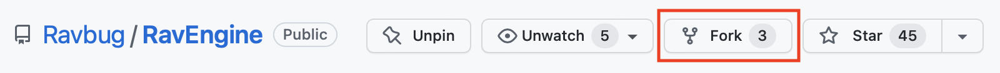
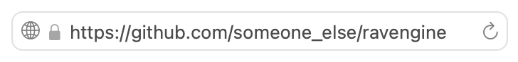
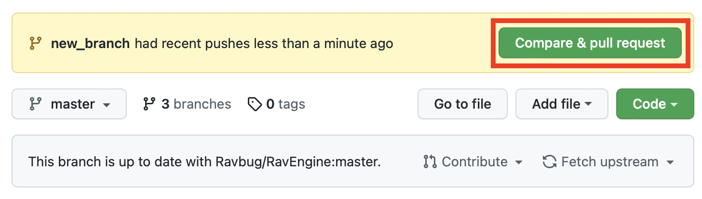
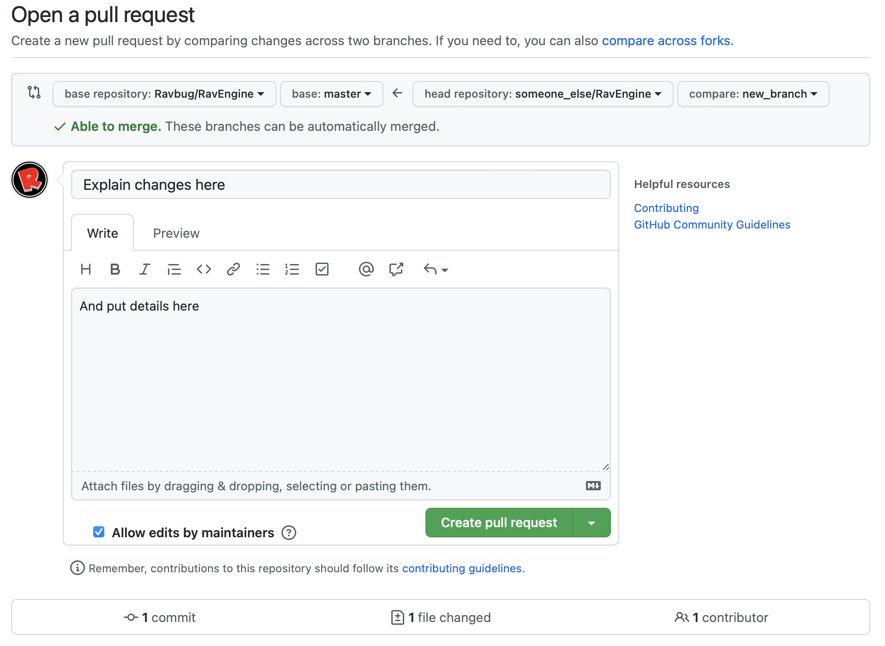
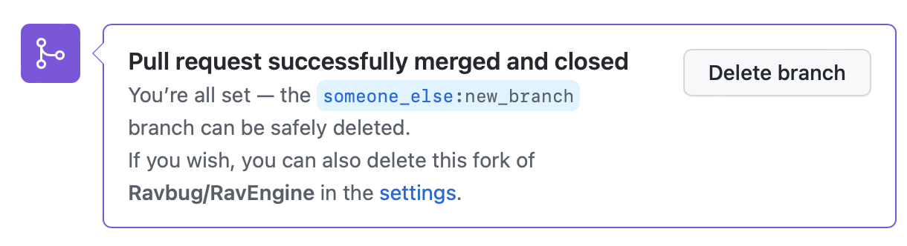

This extremely condensed tutorial shows the steps for creating a Pull Request on GitHub.
-
Press the Fork button on the repository you want to make a PR for:

-
Clone your fork using
git clone https://github.com/[your user]/therepository --depth=1

-
Create a new branch for your changes using
git checkout -b new_branch. You can name the branch
whatever you want, but you'll need this name for future commands
-
Make your changes and commit them on the new branch.
-
Push your changes to your new branch with
git push --set-upstream origin new_branch
-
Go to your repository on GitHub, and press the Compare & Pull Request button

-
Describe your changes, then press Create Pull Request

-
If the maintainers approve your change, then you'll be prompted to delete your branch / fork, which you can optionally do.

Congratulations, you've created a Pull Request on GitHub!